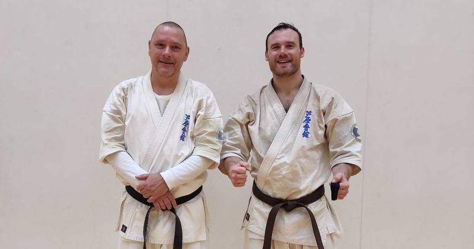

12-01-2024
Nye Bælter
Jan og Kasper får nye bælter
DAO gradueringerne er forbeholdt Ashihara karateudøvere, der skal gradueres til brunt bælte og opefter. Disse gradueringer er fælles for alle Ashihara klubber i Danmark, så der sikres et ensartet niveau for de høje grader. Gradueringerne indeholder en teknisk del, hvor alle de forskellige karate teknikker demonstreres et antal gange så ”eksaminatorerne” kan se at udøverne har styr på disse. Udover den tekniske del er der en del, hvor karateudøverne skal demonstrere deres evner udi Ashihara karatens særkende, nemlig ”Sabaki”, der på dansk betyder ”kampkontrol”. Dette foregår ved, at de der er til graduering, bliver angrebet med ukendte angreb, som de så skal forsvare sig imod. Endelig er der et antal kampe, man skal igennem inden gradueringen er overstået.
Ashihara karatestilarten er knock down karate, hvilket vil sige at i kamp må kæmperne sparke med både fødder, skinneben og knæ og slå for fuld kraft på modstanderen. Det er dog ikke tilladt at slå i hovedet, men til gengæld må der sparkes med fuld kontakt til hovedet.
